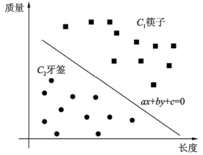
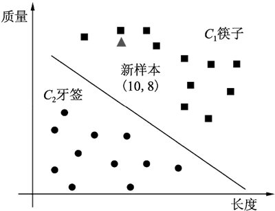
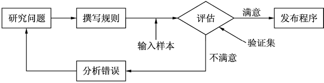
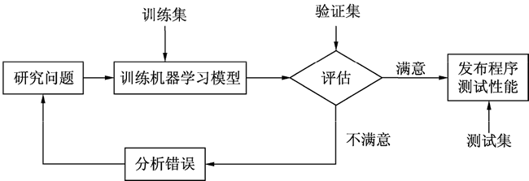
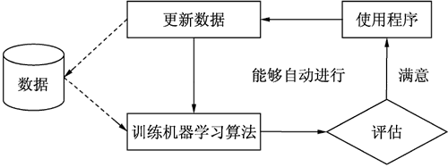
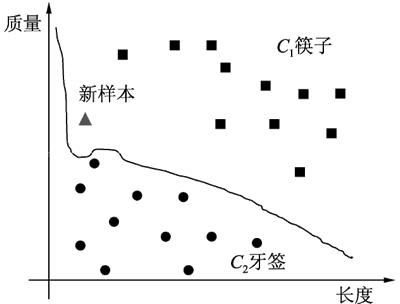
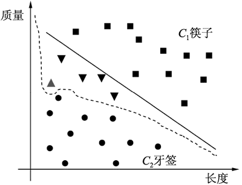
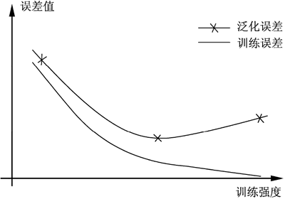

首页 > 编程笔记
什么是机器学习
机器学习一词翻译自英文 Machine Learning，要理解机器学习的含义，关键是要理解学习（Learning）的含义。
人们一听到“学习”，马上就会联想到“读书学习”，在学校里学习等场景。但在英文中，Learning 并不是读书学习的意思（读书学习在英文中叫作 Study）。机器学习中的学习实际上是指从经验中学习，即 Learn from Experience。什么是从经验中学习呢？用一句俗语来说就是“吃一堑，长一智”。可见，从经验中学习就是指不需要看书，从事例中学习的意思。
机器学习就是一门“从事例中学习”的技术。不过一个机器学习任务通常需要从大量的事例中学习，相当于“吃十堑，长一智”（此处“十”泛指很多）。因此，机器学习中的“学习”是从事例实践中进行领悟式学习的意思，不是指死记硬背的记忆式学习，是从实践经验中学习，不是从书本资料中学习，是直接经验而不是间接经验。
举例来说，张三喜欢用石头打狗，他打过 10 次狗，其中被狗咬伤过 8 次。于是他从这些事例中总结出规则：“如果用石头打狗，那么狗是会咬人的”。若将这里的“张三”看成“机器”，那这就是机器学习。
再举一个例子，李四听老人说：“不能用石头打狗，否则狗是会咬人的”，于是李四经过简单推理，得出规则“如果用石头打狗，那么狗是会咬人的”。将“李四”看成“机器”，则这并非是机器学习。首先，这里的知识是听人说的（间接经验），并非是从事例中总结得出；其次，简单的逻辑推理并不是机器学习。因此一般的计算机编程都不是机器学习，像传统的计算机下棋程序就属于逻辑推理，如果它不能从每次的下棋过程中自动改进规则，那么就不是机器学习。
机器学习的一般过程分为如下几步。
例如，收集牙签和筷子的样本并提取它们的特征值，如下表所示。
同理，如果样本有 3 个特征属性，则可将每个样本看成三维空间中的一个点；如果样本有 n 个特征属性，则可将每个样本看成 n 维空间中的一个点（n 维空间无法画出来，但可在脑海中想象一下）。
可见，任何样本都可转换成 n 维空间中的点，这个 n 维空间称为特征空间。将样本转换成特征空间中的样本点，是构建大多数机器学习模型的首要步骤。
接下来就可以构建一个机器学习的分类模型，对这些样本进行分类。最简单的构建方法就是在这两类样本点之间绘制一条分类直线，如下图所示。
显然，只要求出这条分类线的方程，就能确定这条分类线。为此，可以假设该分类线的方程为 ax+by+c=0，然后通过某种算法，求出方程的参数 a、b、c，最终确定该分类直线为 2x+3y-8=0。
可以将这条直线的方程看成从数据中学得的模型。由此可见，分类模型实际上是一个函数，输入的是数据，输出的是类别。
评估模型的有效性就是使用测试集对模型进行测试，评估输出的结果包括准确率等指标。
例如，假设有一个新样本，它的特征值是（10，8），如图 2 所示，则可将该样本的特征值作为 x 和 y 的值代入分类线的方程中。如果结果大于 0，则表明它属于筷子这一类，否则属于牙签这一类。
机器学习又称为统计机器学习，它具有以下 3 个要素：
一个不具有学习能力的智能系统很难称得上是一个真正的智能系统，早期的人工智能系统普遍缺少学习的能力。例如，它们遇到错误时不能自我校正，不会通过经验改善自身的性能，不会自动获取和发现所需要的知识，它们的推理仅限于演绎而缺少归纳。
上述过程如下图所示：
在这个方法中，将输入的样本作为验证集和测试集，即前 n-1 次作为验证集，第 n 次作为测试集。这个方法的缺点是程序中的规则库可能含有一长串很复杂的规则，而且经常需要根据实际变化人工修改这些规则，这就使得程序很难维护。
相反，基于机器学习技术的垃圾邮件识别程序会通过训练集数据自动学习哪个词或哪些短语是垃圾邮件的标识，这是通过与普通邮件比较，检测垃圾邮件中反常频次的词语列表来实现的。这种程序简短、更易于维护，预测也更准确。基于机器学习的方法如图 4 所示。
在机器学习方法中，输入样本的作用是作为训练集、验证集和测试集，即第 1 次作为训练集，第 2 到 n-1 次作为验证集，第 n 次作为测试集。输入样本是由大量的正常邮件和垃圾邮件的特征和类别构成的。特征一般包含主题、发件人、收件人和内容等属性，类别包含正常和垃圾两个类别值。通过训练，机器学习模型能自动总结出垃圾邮件的识别规则，不需要人工手写这些识别规则。
这样做的好处是，假设最初的垃圾邮件主题中都含有 For U 这个特征词，通过手写规则虽然可把含有 For U 的邮件判定为垃圾邮件，但不久后，当垃圾邮件发送者发现所有包含 For U 的邮件都被屏蔽时，可能会转而使用 4 U 这个特征词，使用传统方法的垃圾邮件过滤器需要手动更新规则以标记 4 U 这个特征词。如果垃圾邮件发送者持续地更改特征词，则开发者就需要被动地不停写入新规则。
相反，基于机器学习的垃圾邮件过滤器会根据输入的样本自动总结出含有 For U 或 4 U 等词语的邮件都属于垃圾邮件，然后就能自动标记含有 For U 或 4 U 等词语的邮件为垃圾邮件，无须人工干预，如下图所示。这样，只要输入的样本足够新和丰富，就能自动适应各种垃圾邮件，因此对垃圾邮件的识别可达到很高的准确率。
最后，机器学习可以帮助人们进行学习：检查机器学习算法已经掌握了什么规律。例如，当垃圾邮件过滤器经过足够多的垃圾邮件训练后，就可以列出垃圾邮件预测值的单词和单词组合列表，而这些单词中有些是人们并没有发觉的，从而有助于人们更好地理解问题。
总结一下，机器学习的过程如下：
有监督机器学习是从已有的样本中学习规律，并用来预测未知的样本。它是基于这样一个假设：已有样本和未知样本中蕴含相同的规律。同样，将已有的样本划分为训练集和测试集也是基于这样的假设，即训练集蕴含的规律与测试集蕴含的规律应该是一致的，因此可以用训练集来训练模型，用验证集来验证模型，当模型达到希望的效果后，再用测试集来评估模型的最终效果。
对于机器学习中的样本应保证几点：训练集的数据要尽可能充分且分布平衡（即每个类别的样本数量差不多），并符合一定的清洁度要求（即噪声不能过多），不充分或者分布不平衡的训练集可能不会训练出一个完整的模型；其次，验证集或测试集的样本也需要符合一定的平衡分布和清洁度要求，否则无法测试出一个准确的模型。此外，训练模型和测试模型使用的样本不能相同。
答案是不一定。因为建立机器学习模型的目的是对任何未知类别的实例（即新样本）进行预测，而不是对训练集和测试集中的样本进行预测，很多时候训练集中的样本并不能代表总体中的样本。
以前面筷子和牙签的实例来说，假设在第一步收集样本时收集到了一个袖珍筷子的样本，如下表所示，那么是否需要为了能正确预测该样本而改变模型呢？答案是否定的。
如果为了适应这个特殊的样本而改变模型，则模型的分类准确率在训练集上会有所提高。例如，将图 1 中的分类线修改为如图 6 所示的曲线后，则模型能正确预测所有收集到的训练样本，似乎这样的模型效果更好。
但是将模型应用于新样本的预测中就会发现它对很多新样本（在图 7 中以倒三角形表示的是牙签的新样本）的预测结果都出错了，总体的预测准确率还不如原来的分类直线高，如图 7 所示。
因此，训练模型的最终目的是提高模型对总体（含新样本）的预测准确率，而不是对已知样本的预测准确率，即模型的泛化（Generalization）能力好才是一个好模型，这是对机器学习模型优劣的最根本评价。
泛化能力是评价机器学习模型优劣的最根本的指标，然而模型的训练通常以最小化训练误差为标准。对于固定数量的训练样本，随着训练的不断进行，训练误差会不断降低甚至趋向于 0。
如果模型训练误差过小，就会使训练出来的模型基本上完全适应训练样本。此时，训练模型不仅拟合了训练样本的共性特征，而且也拟合了训练样本的个性特征，这样反而降低了模型的泛化能力，使得泛化误差不断增大，如图 8 所示。这种同时拟合训练样本的共性特征和个性特征的现象称为模型的过拟合。
在分类算法中，通常将样本划分为训练集和测试集，用训练集去学习一个分类模型，用测试集去测试模型的准确率。
分类算法的分类准确率与样本容量有关，当样本容量太小时，容易出现过拟合现象而导致误分类。举例来说，如果某人在生活中遇到的 5~10 个人都是坏人，那么他可能会认为这个世界上所有的人都是坏人。这种根据少数已知类别的样本将大量未知类别的样本都误分类的现象就称为过拟合，这是分类模型泛化能力不强的表现。
所谓过拟合，是对已知类别的样本分类准确率高，而对未知类别的样本分类准确率低。与之相对的概念是欠拟合，即对已知类别的样本分类准确率低，而对未知类别的样本分类准确率也不高。所谓泛化能力是指模型对未知类别的新样本正确分类的能力。
避免过拟合现象的一个有效方法是扩大训练样本的数量，从而尽可能降低样本在训练集和总体上的概率分布差异，以充分增强训练样本的共性特征，而弱化训练样本的个性特征。
近年来随着各行各业不断涌现的大数据，使得通过增加训练样本数量以避免过拟合现象的措施变得可行，这正是机器学习在大数据时代得到迅猛发展的原因。例如百度图像识别程序，其训练集是将近 3000 万张各种图片组成的样本，而特斯拉的自动驾驶程序其训练集是包含上亿条各种路况的图片和视频组成的样本。
需要指出的是，除了增加样本数量能提高泛化能力，避免过拟合以外，正则化和凸优化也是提高泛化能力的两种有效手段。
分类属于监督学习，数据的标签是预设的类别号，根据预设的类别数目，分类模型可分为二分类和多分类。例如，通过人脸识别系统预测某人是否和身份证上显示的一致，属于二分类问题，如果要通过人脸识别系统预测某人是否为逃犯库中的某个逃犯，则属于多分类问题。
机器学习的类型有多种分类方法，最常见的是根据学习方式的不同进行分类，可分为监督学习、无监督学习、半监督学习、强化学习和深度学习。
分类问题的输出是一个值，而标注问题的输出是一个向量，向量的每个值属于一种标记类型。标注模型常用于自然语言处理领域，因为一个文本句子中的词出现的位置是相关联的。可以认为标注模型是分类模型的一个推广，也属于监督学习范畴。标注常用的机器学习方法有隐马尔可夫模型和条件随机场。
无监督学习与监督学习的主要区别在于无监督学习的样本没有标签，这使得无监督学习更具挑战性。无监督学习方法包括聚类分析、主成分分析、关联规则挖掘、降维、自编码器、生成对抗网络和隐语义分析等。
半监督学习的训练数据由大量的未标记数据和少量的已标记数据混合而成。监督学习算法通常会面临标签训练样本数据不足的问题，通过在模型训练中引入未标记样本可以弥补训练样本的不足。
半监督学习方法包括半监督分类、半监督聚类、半监督回归和半监督降维等。半监督学习使用的模型有协同训练（Co-Training）和转导支持向量机（Transductive Support Vector Machine，TSVM）等。
强化学习的思想来源于心理学中的行为主义理论，即动物如何在环境给予的奖励和刺激下逐步形成对刺激的预期，从而产生能获得最大收益的习惯性行为。
强化学习与监督学习的区别在于强化学习并不需要训练样本和相应的类标记，它更加专注于在线规划，需要在未知的领域探索和利用现有知识之间找到平衡。强化学习任务包含两大主体：智能体和环境。智能体也称为学习器，它通过与环境进行交互来实现目标。
深度学习的最大优点是通过组合低层特征形成更加抽象的高级特征，从而发现数据的特征表示。随着抽象等级的增加，表现形式的等级也会增加。例如，使用深度学习识别图像时，这些抽象等级分别是像素->边缘->纹理->基元->主题->部分->对象。
深度学习主要用来学习特征，它被认为是表示学习的一个分支。表示学习通过计算机来学习特征，以便更好地表示数据，其得到的特征通常比手工设计的要好。
深度学习方法也分为监督学习和无监督学习。不同的学习框架所建立的学习模型不同。例如，卷积神经网络就是一种深度监督学习模型，而深度置信网络则是一种深度无监督学习模型。采用深度学习的好处是可以利用特征学习和分层特征提取出高效的算法来替代传统的手工提取特征。
在语音识别中，能观察到的是语音序列，不能观察到的是文字序列，这可以看成一个双重随机过程，识别的目标是用能观察到的语音序列去预测不能观察到的文字序列。为了解决这一问题，由卡内基梅隆大学的 Baum 提出的“隐马尔可夫模型”就是一个双重马尔可夫过程。
马尔可夫过程实际上是一种特殊的随机过程，它假定随机过程在t时刻的状态仅与t-1时刻的状态有关，而与更早时刻的状态无关，这样简化的目的是降低模型的复杂度。这个假定可以用下面公式来表示：
隐马尔可夫模型与高斯混合模型结合，形成了 GMM-HMM 框架，在很长一段时间内都是语音识别的主流方法。
虽然人工神经网络后来也被用于语音识别问题，但早期的神经网络受网络规模、训练样本数、计算能力及算法本身存在的问题等因素限制，并没有显示出比 GMM-HMM 框架更大的优势。但深度学习技术出现后，使用循环神经网络和端到端结构的方法成为主流，大幅度提升了语音识别的准确率，使语音识别技术更加实用。
目前常用的计算机视觉技术包括人脸识别、指纹识别、车牌识别和虹膜识别等技术，目的在于使用计算机代包括人脸识别、指纹识别、车牌识别和虹膜识别等技术，代替人眼对目标进行识别、跟踪，以及估计目标的大小和距离等。
计算机视觉包括图像处理与分析、模式识别和 3D 重构等众多内容，识别和 3D 处理是计算机视觉的核心。机器学习是计算机视觉的重要基础，在计算机视觉的各个环节都需要机器学习算法，如目前常用的人脸检测算法会使用深度学习中的算法。
自然语言处理的内涵领域通常包括自然语言分析和自然语言生成等。其中，自然语言分析包括分词、命名实体、句法分析和语义分析等领域。这些领域都会以机器学习技术作为基础，如对分词方法的研究涉及隐马尔可夫模型，对命令实体的研究会采用强化学习方法和半监督学习方法等。
大数据时代的机器学习更强调“学习本身是手段”，机器学习成为一种支持和服务技术。如何基于机器学习对复杂多样的数据进行深层次分析，从而更高效地利用信息，成为当前大数据环境下机器学习研究的主要方向。因此，机器学习越来越趋向智能数据分析的方向发展，并已成为大数据分析技术的一个重要环节。
机器学习与大数据的结合将产生巨大的价值。目前，大数据分析技术已经在电子商务、互联网金融、旅游推荐和社交网络分析等众多行业和领域得到了广泛应用。
例如，在金融领域，银行可以利用机器学习技术对消费者的刷卡数据进行统计和分类，从而获得消费者的消费习惯、消费能力和消费偏好等具有商业价值的数据信息，这样就能向消费者精准推荐各种服务（如理财或信贷服务）。电信行业可以借助以机器学习为基础的大数据处理软件，对用户信息进行相应处理后得到能够查询客户信用情况的数据，使第三方企业可以凭借数据信息来制定市场分析报告，或者对目标客户群体的行为轨迹进行分析。
人们一听到“学习”，马上就会联想到“读书学习”，在学校里学习等场景。但在英文中，Learning 并不是读书学习的意思（读书学习在英文中叫作 Study）。机器学习中的学习实际上是指从经验中学习，即 Learn from Experience。什么是从经验中学习呢？用一句俗语来说就是“吃一堑，长一智”。可见，从经验中学习就是指不需要看书，从事例中学习的意思。
机器学习就是一门“从事例中学习”的技术。不过一个机器学习任务通常需要从大量的事例中学习，相当于“吃十堑，长一智”（此处“十”泛指很多）。因此，机器学习中的“学习”是从事例实践中进行领悟式学习的意思，不是指死记硬背的记忆式学习，是从实践经验中学习，不是从书本资料中学习，是直接经验而不是间接经验。
举例来说，张三喜欢用石头打狗，他打过 10 次狗，其中被狗咬伤过 8 次。于是他从这些事例中总结出规则：“如果用石头打狗，那么狗是会咬人的”。若将这里的“张三”看成“机器”，那这就是机器学习。
再举一个例子，李四听老人说：“不能用石头打狗，否则狗是会咬人的”，于是李四经过简单推理，得出规则“如果用石头打狗，那么狗是会咬人的”。将“李四”看成“机器”，则这并非是机器学习。首先，这里的知识是听人说的（间接经验），并非是从事例中总结得出；其次，简单的逻辑推理并不是机器学习。因此一般的计算机编程都不是机器学习，像传统的计算机下棋程序就属于逻辑推理，如果它不能从每次的下棋过程中自动改进规则，那么就不是机器学习。
机器学习的一般过程
在机器学习中，事例是以样本的形式表现出来的，每个事例就是一个样本，所有事例构成样本集。因此，要使用机器学习技术，第一步就是要收集足够多的相关样本，然后再用这些样本去构建一个机器学习模型（称为模型的训练）。机器学习的一般过程分为如下几步。
1) 收集相关样本
例如，要让机器能自动分辨筷子和牙签这两种物品，那么首先应收集很多支筷子和牙签的样本，然后提取这些样本可分辨的特征属性。对于牙签和筷子来说，显然长度、重量和材质等是它们可分辨的特征。例如，收集牙签和筷子的样本并提取它们的特征值，如下表所示。
| 序 号 | 长度（cm） | 质量（g） | 材 质 | 类 别 |
|---|---|---|---|---|
| 1 | 25 | 8 | 竹 | 筷子 |
| 2 | 23 | 7 | 竹 | 筷子 |
| 3 | 20 | 4 | 木 | 筷子 |
| 4 | 6 | 0.1 | 竹 | 牙签 |
| 5 | 5 | 0.08 | 竹 | 牙签 |
| 6 | 5.8 | 0.09 | 竹 | 牙签 |
提示：在传统的机器学习方法中，样本的特征是需要人工选取的。
2) 特征提取
观察表 1 可以发现，要分辨筷子和牙签，只需要根据长度和质量这两个特征来区分即可，材质这个特征对区分筷子和牙签的作用不明显。因此可以在所有特征属性中只提取长度和质量这两个特征，而将材质这个特征删除，这个过程称为特征提取，特征提取后的样本如表 2 所示。| 序 号 | 长 度 | 质 量 | 类 别 |
|---|---|---|---|
| 1 | 25 | 8 | 筷子 |
| 2 | 23 | 7 | 筷子 |
| 3 | 20 | 4 | 筷子 |
| 4 | 6 | 0.1 | 牙签 |
| 5 | 5 | 0.08 | 牙签 |
| 6 | 5.8 | 0.09 | 牙签 |
3) 构建模型
本实例中收集的样本共提取了两个特征属性，那么不妨将这两个特征看成 x 轴和 y 轴坐标，则每个样本就成为二维平面上的一个点（样本点）。同理，如果样本有 3 个特征属性，则可将每个样本看成三维空间中的一个点；如果样本有 n 个特征属性，则可将每个样本看成 n 维空间中的一个点（n 维空间无法画出来，但可在脑海中想象一下）。
可见，任何样本都可转换成 n 维空间中的点，这个 n 维空间称为特征空间。将样本转换成特征空间中的样本点，是构建大多数机器学习模型的首要步骤。
接下来就可以构建一个机器学习的分类模型，对这些样本进行分类。最简单的构建方法就是在这两类样本点之间绘制一条分类直线，如下图所示。

图 1 绘制分类线对样本进行分类
图 1 绘制分类线对样本进行分类
显然，只要求出这条分类线的方程，就能确定这条分类线。为此，可以假设该分类线的方程为 ax+by+c=0，然后通过某种算法，求出方程的参数 a、b、c，最终确定该分类直线为 2x+3y-8=0。
可以将这条直线的方程看成从数据中学得的模型。由此可见，分类模型实际上是一个函数，输入的是数据，输出的是类别。
提示：从数据中学得模型的过程称为训练（Training）或学习（Learning），这个过程通过执行某个学习算法来完成。
4) 评估模型的有效性
使用数据训练出一个模型之后，一般需要评估该模型的效果，看能否满足实际问题的需要。为此，在收集了样本之后，一般不是把所有的样本都用来训练模型，而是先把样本分成两部分，把其中的一大部分样本拿出来训练模型，这部分样本称为训练集（Trainning set），另外一小部分样本拿来测试模型的有效性，这部分样本称为测试集（Testing set）。评估模型的有效性就是使用测试集对模型进行测试，评估输出的结果包括准确率等指标。
5) 使用模型预测新样本
经过评估，如果模型的性能达到实际要求，就可以使用该模型预测任何新样本的类别。例如，假设有一个新样本，它的特征值是（10，8），如图 2 所示，则可将该样本的特征值作为 x 和 y 的值代入分类线的方程中。如果结果大于 0，则表明它属于筷子这一类，否则属于牙签这一类。

图 2 绘制分类线对样本进行分类
图 2 绘制分类线对样本进行分类
机器学习的定义
机器学习的定义：假设在任务 T 上有一个程序，随着经验E的增加，效果 P 也随之增加，则称这个程序可以从经验中学习（Tom M.Mitchell，1997）。简而言之，机器学习是对能通过经验自动改进的计算机算法的研究。机器学习又称为统计机器学习，它具有以下 3 个要素：
- 模型（Model）：在未进行训练前，模型可能的参数是多个甚至无穷的，因此可能的模型也是多个甚至无穷的，这些模型构成的集合就是假设空间。
- 策略（Strategy）：从假设空间中挑选出参数最优的模型的准则。模型的分类或预测结果与实际情况的误差（损失函数）越小，模型就越好，那么策略就是让误差最小。
- 算法（Algorithm）：从假设空间中挑选模型的方法（等同于求解最佳的模型参数）。机器学习的参数求解通常都会转化为最优化问题，因此学习算法通常是最优化算法。
一个不具有学习能力的智能系统很难称得上是一个真正的智能系统，早期的人工智能系统普遍缺少学习的能力。例如，它们遇到错误时不能自我校正，不会通过经验改善自身的性能，不会自动获取和发现所需要的知识，它们的推理仅限于演绎而缺少归纳。
机器学习的过程举例
机器学习的过程总结如下：- 获取大量和任务相关的数据集来构建模型。
- 通过不断迭代模型在数据集上的误差，使误差最小来训练模型，从而得到对数据集拟合的合理模型。
- 将训练好并调整好的模型应用到真实的场景中。
1) 机器学习程序和传统程序的区别
例如，要编写一个垃圾邮件识别与过滤程序，传统的方法如下：- 先观察一下垃圾邮件一般是什么样子，比如有一些词或短语（如 from、信用卡、免费、amazing）会在邮件主题中频繁出现，除此之外，也许发件人姓名、邮件正文格式等也存在异常。
- 将观察到的规律写成一个检测程序，然后收集一些邮件（既有正常邮件，也有垃圾邮件）作为检测样本。如果程序在样本中检测到了这些规律，就将这些邮件标记为垃圾邮件。
- 测试程序，根据样本调整规则，重复第 1 步和第 2 步，直到检测程序的准确率满足要求为止。
上述过程如下图所示：

图 3 不使用机器学习的传统程序
图 3 不使用机器学习的传统程序
在这个方法中，将输入的样本作为验证集和测试集，即前 n-1 次作为验证集，第 n 次作为测试集。这个方法的缺点是程序中的规则库可能含有一长串很复杂的规则，而且经常需要根据实际变化人工修改这些规则，这就使得程序很难维护。
相反，基于机器学习技术的垃圾邮件识别程序会通过训练集数据自动学习哪个词或哪些短语是垃圾邮件的标识，这是通过与普通邮件比较，检测垃圾邮件中反常频次的词语列表来实现的。这种程序简短、更易于维护，预测也更准确。基于机器学习的方法如图 4 所示。

图 4 基于机器学习的方法
图 4 基于机器学习的方法
在机器学习方法中，输入样本的作用是作为训练集、验证集和测试集，即第 1 次作为训练集，第 2 到 n-1 次作为验证集，第 n 次作为测试集。输入样本是由大量的正常邮件和垃圾邮件的特征和类别构成的。特征一般包含主题、发件人、收件人和内容等属性，类别包含正常和垃圾两个类别值。通过训练，机器学习模型能自动总结出垃圾邮件的识别规则，不需要人工手写这些识别规则。
这样做的好处是，假设最初的垃圾邮件主题中都含有 For U 这个特征词，通过手写规则虽然可把含有 For U 的邮件判定为垃圾邮件，但不久后，当垃圾邮件发送者发现所有包含 For U 的邮件都被屏蔽时，可能会转而使用 4 U 这个特征词，使用传统方法的垃圾邮件过滤器需要手动更新规则以标记 4 U 这个特征词。如果垃圾邮件发送者持续地更改特征词，则开发者就需要被动地不停写入新规则。
相反，基于机器学习的垃圾邮件过滤器会根据输入的样本自动总结出含有 For U 或 4 U 等词语的邮件都属于垃圾邮件，然后就能自动标记含有 For U 或 4 U 等词语的邮件为垃圾邮件，无须人工干预，如下图所示。这样，只要输入的样本足够新和丰富，就能自动适应各种垃圾邮件，因此对垃圾邮件的识别可达到很高的准确率。

图 5 机器学习方法能自动适应数据的改变
图 5 机器学习方法能自动适应数据的改变
最后，机器学习可以帮助人们进行学习：检查机器学习算法已经掌握了什么规律。例如，当垃圾邮件过滤器经过足够多的垃圾邮件训练后，就可以列出垃圾邮件预测值的单词和单词组合列表，而这些单词中有些是人们并没有发觉的，从而有助于人们更好地理解问题。
总结一下，机器学习的过程如下：
- 研究数据；
- 选择模型；
- 用训练数据进行模型训练（即用算法搜寻模型的参数值，使代价函数最小）；
- 使用训练好的模型对新案例（样本）进行预测（称为推断），如果这个模型的预测效果不错，那么就可以作为一个典型的机器学习项目。
2) 训练集、验证集和测试集
以上两个实例相比不同点在于，第二个实例的输入样本被划分成训练集、验证集和测试集三部分，而在第一个实例中，输入样本只被划分为训练集和测试集。实际上，验证集是为了调整模型的参数。虽然验证集和测试集都会评估模型的效果（如输出预测的准确率），但它们的区别很明显，验证集是在模型训练的过程中评估模型，评估之后模型还会继续被修改。而测试集是在模型训练好之后评估模型，评估后模型不会再被修改。由于验证集也是在模型训练过程中使用数据，因此有时也把验证集看成训练集的一部分（如 sklearn），不再区分训练集和验证集。有监督机器学习是从已有的样本中学习规律，并用来预测未知的样本。它是基于这样一个假设：已有样本和未知样本中蕴含相同的规律。同样，将已有的样本划分为训练集和测试集也是基于这样的假设，即训练集蕴含的规律与测试集蕴含的规律应该是一致的，因此可以用训练集来训练模型，用验证集来验证模型，当模型达到希望的效果后，再用测试集来评估模型的最终效果。
对于机器学习中的样本应保证几点：训练集的数据要尽可能充分且分布平衡（即每个类别的样本数量差不多），并符合一定的清洁度要求（即噪声不能过多），不充分或者分布不平衡的训练集可能不会训练出一个完整的模型；其次，验证集或测试集的样本也需要符合一定的平衡分布和清洁度要求，否则无法测试出一个准确的模型。此外，训练模型和测试模型使用的样本不能相同。
评估机器学习模型的效果
当模型训练出来后，需要使用测试集中的样本测试模型的准确率。那么，是不是模型对测试集样本的预测准确率越高越好呢？答案是不一定。因为建立机器学习模型的目的是对任何未知类别的实例（即新样本）进行预测，而不是对训练集和测试集中的样本进行预测，很多时候训练集中的样本并不能代表总体中的样本。
以前面筷子和牙签的实例来说，假设在第一步收集样本时收集到了一个袖珍筷子的样本，如下表所示，那么是否需要为了能正确预测该样本而改变模型呢？答案是否定的。
| 序 号 | 长 度 | 质 量 | 材 质 | 类 别 |
|---|---|---|---|---|
| 7 | 6 | 1 | 竹 | 筷子 |
如果为了适应这个特殊的样本而改变模型，则模型的分类准确率在训练集上会有所提高。例如，将图 1 中的分类线修改为如图 6 所示的曲线后，则模型能正确预测所有收集到的训练样本，似乎这样的模型效果更好。

图 6 为适应特殊样本而修改分类线为曲线
图 6 为适应特殊样本而修改分类线为曲线
但是将模型应用于新样本的预测中就会发现它对很多新样本（在图 7 中以倒三角形表示的是牙签的新样本）的预测结果都出错了，总体的预测准确率还不如原来的分类直线高，如图 7 所示。

图 7 两种分类线的预测准确率对比
图 7 两种分类线的预测准确率对比
因此，训练模型的最终目的是提高模型对总体（含新样本）的预测准确率，而不是对已知样本的预测准确率，即模型的泛化（Generalization）能力好才是一个好模型，这是对机器学习模型优劣的最根本评价。
泛化能力是评价机器学习模型优劣的最根本的指标，然而模型的训练通常以最小化训练误差为标准。对于固定数量的训练样本，随着训练的不断进行，训练误差会不断降低甚至趋向于 0。
如果模型训练误差过小，就会使训练出来的模型基本上完全适应训练样本。此时，训练模型不仅拟合了训练样本的共性特征，而且也拟合了训练样本的个性特征，这样反而降低了模型的泛化能力，使得泛化误差不断增大，如图 8 所示。这种同时拟合训练样本的共性特征和个性特征的现象称为模型的过拟合。

图 8 训练误差与泛化误差的关系
图 8 训练误差与泛化误差的关系
在分类算法中，通常将样本划分为训练集和测试集，用训练集去学习一个分类模型，用测试集去测试模型的准确率。
分类算法的分类准确率与样本容量有关，当样本容量太小时，容易出现过拟合现象而导致误分类。举例来说，如果某人在生活中遇到的 5~10 个人都是坏人，那么他可能会认为这个世界上所有的人都是坏人。这种根据少数已知类别的样本将大量未知类别的样本都误分类的现象就称为过拟合，这是分类模型泛化能力不强的表现。
所谓过拟合，是对已知类别的样本分类准确率高，而对未知类别的样本分类准确率低。与之相对的概念是欠拟合，即对已知类别的样本分类准确率低，而对未知类别的样本分类准确率也不高。所谓泛化能力是指模型对未知类别的新样本正确分类的能力。
避免过拟合现象的一个有效方法是扩大训练样本的数量，从而尽可能降低样本在训练集和总体上的概率分布差异，以充分增强训练样本的共性特征，而弱化训练样本的个性特征。
近年来随着各行各业不断涌现的大数据，使得通过增加训练样本数量以避免过拟合现象的措施变得可行，这正是机器学习在大数据时代得到迅猛发展的原因。例如百度图像识别程序，其训练集是将近 3000 万张各种图片组成的样本，而特斯拉的自动驾驶程序其训练集是包含上亿条各种路况的图片和视频组成的样本。
需要指出的是，除了增加样本数量能提高泛化能力，避免过拟合以外，正则化和凸优化也是提高泛化能力的两种有效手段。
机器学习的类型
1、按完成的任务分类
从机器学习完成的任务来看，机器学习算法可分为聚类、分类、回归和标注等。1) 聚类
聚类（Clustering）：用于将样本数据按照某种相似性划分为多个簇，将相似的样本划分到同一个簇中。聚类属于无监督学习，它的训练数据没有标签，但经预测后的数据会被标记上标签，该标签就是它所属的簇号。2) 分类
分类是机器学习中应用最广泛的任务，用于将某个样本判定为预先设定的多个类别中的某一个。分类属于监督学习，数据的标签是预设的类别号，根据预设的类别数目，分类模型可分为二分类和多分类。例如，通过人脸识别系统预测某人是否和身份证上显示的一致，属于二分类问题，如果要通过人脸识别系统预测某人是否为逃犯库中的某个逃犯，则属于多分类问题。
机器学习的类型有多种分类方法，最常见的是根据学习方式的不同进行分类，可分为监督学习、无监督学习、半监督学习、强化学习和深度学习。
3) 回归
回归最初是统计学中的一种方法，回归模型的预测结果不是看属于哪一类，而是看它是什么值，可以看作将分类模型的类别数无限增加，即标签值不再是几个离散值，而是连续的值。例如预测一套二手房的房价是多少，因为房价是一组连续的值，因此这是一个回归问题，回归也属于监督学习。4) 标注
标注模型用于处理前后有关联关系的序列问题。在预测时，标注模型的输入是一个观察序列，该观察序列的元素一般具有前后相关关系。标注模型的输出是一个标签序列。也就是说，标注模型的输出是一个向量，该向量中的每个元素都是一个标签，标签的值是有限的离散值。分类问题的输出是一个值，而标注问题的输出是一个向量，向量的每个值属于一种标记类型。标注模型常用于自然语言处理领域，因为一个文本句子中的词出现的位置是相关联的。可以认为标注模型是分类模型的一个推广，也属于监督学习范畴。标注常用的机器学习方法有隐马尔可夫模型和条件随机场。
2、按学习的过程分类
从学习的过程来看，机器学习算法可分为监督学习、无监督学习和半监督学习等。1) 监督学习
监督学习是机器学习中使用最广泛的方法，监督学习是从带有类别标签（Label）的训练数据中学得一个模型，并基于此模型来预测新样本的标签。因此监督学习的训练样本包括特征属性和类别标签两部分。2) 无监督学习
无监督学习是另一大类机器学习方法，它能在无标签的训练集中发现数据规律。无监督学习与监督学习的主要区别在于无监督学习的样本没有标签，这使得无监督学习更具挑战性。无监督学习方法包括聚类分析、主成分分析、关联规则挖掘、降维、自编码器、生成对抗网络和隐语义分析等。
3) 半监督学习
半监督学习（Semi-Supervised Learning，SSL）是将监督学习与无监督学习结合在一起的一种学习方法。半监督学习的训练数据由大量的未标记数据和少量的已标记数据混合而成。监督学习算法通常会面临标签训练样本数据不足的问题，通过在模型训练中引入未标记样本可以弥补训练样本的不足。
半监督学习方法包括半监督分类、半监督聚类、半监督回归和半监督降维等。半监督学习使用的模型有协同训练（Co-Training）和转导支持向量机（Transductive Support Vector Machine，TSVM）等。
4) 强化学习
强化学习是机器学习中一个较新的领域，它能根据环境而发生改变，从而取得最大的收益。强化学习的思想来源于心理学中的行为主义理论，即动物如何在环境给予的奖励和刺激下逐步形成对刺激的预期，从而产生能获得最大收益的习惯性行为。
强化学习与监督学习的区别在于强化学习并不需要训练样本和相应的类标记，它更加专注于在线规划，需要在未知的领域探索和利用现有知识之间找到平衡。强化学习任务包含两大主体：智能体和环境。智能体也称为学习器，它通过与环境进行交互来实现目标。
5) 深度学习
深度学习的概念来源于对人工神经网络的研究，包含多个隐含层的多层感知机是一种最初的深度学习结构。深度学习的最大优点是通过组合低层特征形成更加抽象的高级特征，从而发现数据的特征表示。随着抽象等级的增加，表现形式的等级也会增加。例如，使用深度学习识别图像时，这些抽象等级分别是像素->边缘->纹理->基元->主题->部分->对象。
深度学习主要用来学习特征，它被认为是表示学习的一个分支。表示学习通过计算机来学习特征，以便更好地表示数据，其得到的特征通常比手工设计的要好。
深度学习方法也分为监督学习和无监督学习。不同的学习框架所建立的学习模型不同。例如，卷积神经网络就是一种深度监督学习模型，而深度置信网络则是一种深度无监督学习模型。采用深度学习的好处是可以利用特征学习和分层特征提取出高效的算法来替代传统的手工提取特征。
机器学习的应用领域
机器学习在以下几个领域已经有比较成熟的应用，下面根据这些应用出现的时间分别介绍。1) 语音识别
机器学习最早在商业领域的应用是语音识别技术。语音识别的目标是理解人说话的声音信号，将它转换成文字。语音识别是语音输入法、人机对话系统等应用的关键技术，是模式识别领域被深入、广泛研究的基础问题之一。在语音识别中，能观察到的是语音序列，不能观察到的是文字序列，这可以看成一个双重随机过程，识别的目标是用能观察到的语音序列去预测不能观察到的文字序列。为了解决这一问题，由卡内基梅隆大学的 Baum 提出的“隐马尔可夫模型”就是一个双重马尔可夫过程。
马尔可夫过程实际上是一种特殊的随机过程，它假定随机过程在t时刻的状态仅与t-1时刻的状态有关，而与更早时刻的状态无关，这样简化的目的是降低模型的复杂度。这个假定可以用下面公式来表示：
p(zt|zt-1, zt-2, ..., z1)=p(zt|zt-1)
这个假设称为一阶马尔可夫假设，满足这一假设的马尔可夫模型称为一阶马尔可夫过程。隐马尔可夫模型与高斯混合模型结合，形成了 GMM-HMM 框架，在很长一段时间内都是语音识别的主流方法。
虽然人工神经网络后来也被用于语音识别问题，但早期的神经网络受网络规模、训练样本数、计算能力及算法本身存在的问题等因素限制，并没有显示出比 GMM-HMM 框架更大的优势。但深度学习技术出现后，使用循环神经网络和端到端结构的方法成为主流，大幅度提升了语音识别的准确率，使语音识别技术更加实用。
2) 计算机视觉
计算机视觉是一门研究如何让机器“看”的科学。目前常用的计算机视觉技术包括人脸识别、指纹识别、车牌识别和虹膜识别等技术，目的在于使用计算机代包括人脸识别、指纹识别、车牌识别和虹膜识别等技术，代替人眼对目标进行识别、跟踪，以及估计目标的大小和距离等。
计算机视觉包括图像处理与分析、模式识别和 3D 重构等众多内容，识别和 3D 处理是计算机视觉的核心。机器学习是计算机视觉的重要基础，在计算机视觉的各个环节都需要机器学习算法，如目前常用的人脸检测算法会使用深度学习中的算法。
3) 自然语言处理
自然语言处理是计算机科学与语言学相结合而产生的一个应用领域，它包括机器翻译、自动文摘、人机对话、信息抽取、情感分析和机器阅读理解等。自然语言处理的内涵领域通常包括自然语言分析和自然语言生成等。其中，自然语言分析包括分词、命名实体、句法分析和语义分析等领域。这些领域都会以机器学习技术作为基础，如对分词方法的研究涉及隐马尔可夫模型，对命令实体的研究会采用强化学习方法和半监督学习方法等。
4) 大数据分析
随着大数据时代的到来，各行业对数据分析需求持续增加。通过机器学习高效地获取知识，已逐渐成为当今大数据分析技术发展的主要推动力。大数据时代的机器学习更强调“学习本身是手段”，机器学习成为一种支持和服务技术。如何基于机器学习对复杂多样的数据进行深层次分析，从而更高效地利用信息，成为当前大数据环境下机器学习研究的主要方向。因此，机器学习越来越趋向智能数据分析的方向发展，并已成为大数据分析技术的一个重要环节。
机器学习与大数据的结合将产生巨大的价值。目前，大数据分析技术已经在电子商务、互联网金融、旅游推荐和社交网络分析等众多行业和领域得到了广泛应用。
例如，在金融领域，银行可以利用机器学习技术对消费者的刷卡数据进行统计和分类，从而获得消费者的消费习惯、消费能力和消费偏好等具有商业价值的数据信息，这样就能向消费者精准推荐各种服务（如理财或信贷服务）。电信行业可以借助以机器学习为基础的大数据处理软件，对用户信息进行相应处理后得到能够查询客户信用情况的数据，使第三方企业可以凭借数据信息来制定市场分析报告，或者对目标客户群体的行为轨迹进行分析。
关注公众号「站长严长生」，在手机上阅读所有教程，随时随地都能学习。内含一款搜索神器，免费下载全网书籍和视频。

微信扫码关注公众号